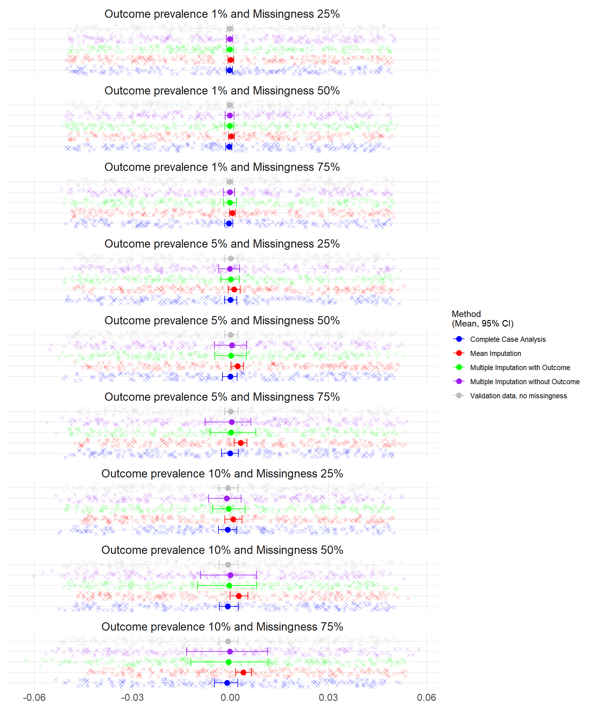

8 Results for MAR N=100,000
8.1 Predictive Performance from Study 1 N=100,000 under Missing at Random
8.1.1 Brier Score
At prevalence 5% and 10%, the CCA brier score was consistently lower with no overlap in the confidence intervals; all other methods had similar brier scores ?fig-brier_score. At 1% outcome prevalence, there was no difference between the methods although slightly lower average CCA.
8.1.2 Discrimination
When missingness is lowest (25%), there is limited difference between the methods. Under each scenario, the multiple imputation methods have almost identical AUC. The multiple imputation methods had the lowest discrimination in each scenario and was most affected by missingness. CCA had the highest discrimination, followed by mean imputation. Large differences were seen at 10% prevalence.
8.1.3 Calibration in the Large and Calibration Slope
The Calibration was assessed through Calibration in the Large (CATL) and the Calibration Slope.
The ideal value of CATL is 0, which indicates perfect calibration, positive values indicate the model is underestimating the risk while negative values indicate overestimation. Larger deviations from 0 suggest poorer calibration.
The ideal value of the Calibration Slope is 1 indicating perfect calibration across all risk levels. Values less than 1 suggest overfitting (predictions are too extreme), while values greater than 1 suggest underfitting (predictions are too conservative). Values that differ significantly from 1 indicate poor calibration.
8.1.4 Bias
The Bias was assessed for each simulation (where 0 indicates no bias and the model estimates are on average equal to the true values).

8.1.5 Root Mean Square Error
The RMSE was assessed for each simulation where lower error indicates a better fit of the model. The lowest prevalence simulations (1%) had the lowest mean square error.
Below, Table 8.1 summarises the Performance Measures under N=100,000.
| Scenario | Method to handle missing data | Performance Measure | Average | Lower Confidence Interval | Upper Confidence Interval | Number of simulations that failed to converge |
|---|---|---|---|---|---|---|
| Outcome prevalence 10% and Missingness 75% | Complete Case Analysis | Calibration in the Large | -0.0157 | -0.0708 | 0.0305 | 0 |
| Outcome prevalence 10% and Missingness 75% | Complete Case Analysis | Calibration Slope | 1.0141 | 0.9610 | 1.0643 | 0 |
| Outcome prevalence 10% and Missingness 75% | Complete Case Analysis | AUC | 0.7668 | 0.7557 | 0.7778 | 0 |
| Outcome prevalence 10% and Missingness 75% | Complete Case Analysis | Brier Score | 0.0713 | 0.0684 | 0.0738 | 0 |
| Outcome prevalence 10% and Missingness 75% | Complete Case Analysis | Bias | -0.0011 | -0.0050 | 0.0022 | 0 |
| Outcome prevalence 10% and Missingness 75% | Complete Case Analysis | Mean Square Error | 0.0713 | 0.0684 | 0.0738 | 0 |
| Outcome prevalence 10% and Missingness 75% | Complete Case Analysis | Root Mean Square Error | 0.2670 | 0.2615 | 0.2717 | 0 |
| Outcome prevalence 10% and Missingness 75% | Multiple Imputation without Outcome | Calibration in the Large | -0.0009 | -0.1605 | 0.1477 | 0 |
| Outcome prevalence 10% and Missingness 75% | Multiple Imputation without Outcome | Calibration Slope | 0.8310 | 0.7510 | 0.9001 | 0 |
| Outcome prevalence 10% and Missingness 75% | Multiple Imputation without Outcome | AUC | 0.7281 | 0.7176 | 0.7370 | 0 |
| Outcome prevalence 10% and Missingness 75% | Multiple Imputation without Outcome | Brier Score | 0.0840 | 0.0822 | 0.0859 | 0 |
| Outcome prevalence 10% and Missingness 75% | Multiple Imputation without Outcome | Bias | -0.0002 | -0.0134 | 0.0113 | 0 |
| Outcome prevalence 10% and Missingness 75% | Multiple Imputation without Outcome | Mean Square Error | 0.0840 | 0.0822 | 0.0859 | 0 |
| Outcome prevalence 10% and Missingness 75% | Multiple Imputation without Outcome | Root Mean Square Error | 0.2898 | 0.2868 | 0.2931 | 0 |
| Outcome prevalence 10% and Missingness 75% | Multiple Imputation with Outcome | Calibration in the Large | -0.0054 | -0.1447 | 0.1487 | 0 |
| Outcome prevalence 10% and Missingness 75% | Multiple Imputation with Outcome | Calibration Slope | 0.8309 | 0.7446 | 0.8964 | 0 |
| Outcome prevalence 10% and Missingness 75% | Multiple Imputation with Outcome | AUC | 0.7282 | 0.7183 | 0.7361 | 0 |
| Outcome prevalence 10% and Missingness 75% | Multiple Imputation with Outcome | Brier Score | 0.0840 | 0.0821 | 0.0862 | 0 |
| Outcome prevalence 10% and Missingness 75% | Multiple Imputation with Outcome | Bias | -0.0006 | -0.0122 | 0.0116 | 0 |
| Outcome prevalence 10% and Missingness 75% | Multiple Imputation with Outcome | Mean Square Error | 0.0840 | 0.0821 | 0.0862 | 0 |
| Outcome prevalence 10% and Missingness 75% | Multiple Imputation with Outcome | Root Mean Square Error | 0.2898 | 0.2866 | 0.2935 | 0 |
| Outcome prevalence 10% and Missingness 75% | Mean Imputation | Calibration in the Large | 0.0483 | 0.0191 | 0.0796 | 0 |
| Outcome prevalence 10% and Missingness 75% | Mean Imputation | Calibration Slope | 0.9893 | 0.9642 | 1.0170 | 0 |
| Outcome prevalence 10% and Missingness 75% | Mean Imputation | AUC | 0.7458 | 0.7407 | 0.7518 | 0 |
| Outcome prevalence 10% and Missingness 75% | Mean Imputation | Brier Score | 0.0823 | 0.0807 | 0.0840 | 0 |
| Outcome prevalence 10% and Missingness 75% | Mean Imputation | Bias | 0.0039 | 0.0015 | 0.0065 | 0 |
| Outcome prevalence 10% and Missingness 75% | Mean Imputation | Mean Square Error | 0.0823 | 0.0807 | 0.0840 | 0 |
| Outcome prevalence 10% and Missingness 75% | Mean Imputation | Root Mean Square Error | 0.2868 | 0.2840 | 0.2898 | 0 |
| Outcome prevalence 10% and Missingness 50% | Complete Case Analysis | Calibration in the Large | -0.0114 | -0.0465 | 0.0312 | 0 |
| Outcome prevalence 10% and Missingness 50% | Complete Case Analysis | Calibration Slope | 1.0136 | 0.9772 | 1.0461 | 0 |
| Outcome prevalence 10% and Missingness 50% | Complete Case Analysis | AUC | 0.7661 | 0.7578 | 0.7725 | 0 |
| Outcome prevalence 10% and Missingness 50% | Complete Case Analysis | Brier Score | 0.0744 | 0.0726 | 0.0766 | 0 |
| Outcome prevalence 10% and Missingness 50% | Complete Case Analysis | Bias | -0.0008 | -0.0034 | 0.0024 | 0 |
| Outcome prevalence 10% and Missingness 50% | Complete Case Analysis | Mean Square Error | 0.0744 | 0.0726 | 0.0766 | 0 |
| Outcome prevalence 10% and Missingness 50% | Complete Case Analysis | Root Mean Square Error | 0.2728 | 0.2694 | 0.2768 | 0 |
| Outcome prevalence 10% and Missingness 50% | Multiple Imputation without Outcome | Calibration in the Large | -0.0001 | -0.1093 | 0.1011 | 0 |
| Outcome prevalence 10% and Missingness 50% | Multiple Imputation without Outcome | Calibration Slope | 0.8820 | 0.8108 | 0.9322 | 0 |
| Outcome prevalence 10% and Missingness 50% | Multiple Imputation without Outcome | AUC | 0.7398 | 0.7310 | 0.7468 | 0 |
| Outcome prevalence 10% and Missingness 50% | Multiple Imputation without Outcome | Brier Score | 0.0830 | 0.0807 | 0.0853 | 0 |
| Outcome prevalence 10% and Missingness 50% | Multiple Imputation without Outcome | Bias | -0.0001 | -0.0091 | 0.0080 | 0 |
| Outcome prevalence 10% and Missingness 50% | Multiple Imputation without Outcome | Mean Square Error | 0.0830 | 0.0807 | 0.0853 | 0 |
| Outcome prevalence 10% and Missingness 50% | Multiple Imputation without Outcome | Root Mean Square Error | 0.2881 | 0.2841 | 0.2921 | 0 |
| Outcome prevalence 10% and Missingness 50% | Multiple Imputation with Outcome | Calibration in the Large | -0.0047 | -0.1216 | 0.1007 | 0 |
| Outcome prevalence 10% and Missingness 50% | Multiple Imputation with Outcome | Calibration Slope | 0.8836 | 0.8259 | 0.9374 | 0 |
| Outcome prevalence 10% and Missingness 50% | Multiple Imputation with Outcome | AUC | 0.7401 | 0.7319 | 0.7472 | 0 |
| Outcome prevalence 10% and Missingness 50% | Multiple Imputation with Outcome | Brier Score | 0.0830 | 0.0810 | 0.0850 | 0 |
| Outcome prevalence 10% and Missingness 50% | Multiple Imputation with Outcome | Bias | -0.0004 | -0.0101 | 0.0079 | 0 |
| Outcome prevalence 10% and Missingness 50% | Multiple Imputation with Outcome | Mean Square Error | 0.0830 | 0.0810 | 0.0850 | 0 |
| Outcome prevalence 10% and Missingness 50% | Multiple Imputation with Outcome | Root Mean Square Error | 0.2880 | 0.2846 | 0.2915 | 0 |
| Outcome prevalence 10% and Missingness 50% | Mean Imputation | Calibration in the Large | 0.0304 | -0.0020 | 0.0648 | 0 |
| Outcome prevalence 10% and Missingness 50% | Mean Imputation | Calibration Slope | 0.9975 | 0.9716 | 1.0213 | 0 |
| Outcome prevalence 10% and Missingness 50% | Mean Imputation | AUC | 0.7524 | 0.7467 | 0.7576 | 0 |
| Outcome prevalence 10% and Missingness 50% | Mean Imputation | Brier Score | 0.0818 | 0.0799 | 0.0839 | 0 |
| Outcome prevalence 10% and Missingness 50% | Mean Imputation | Bias | 0.0025 | -0.0002 | 0.0053 | 0 |
| Outcome prevalence 10% and Missingness 50% | Mean Imputation | Mean Square Error | 0.0818 | 0.0799 | 0.0839 | 0 |
| Outcome prevalence 10% and Missingness 50% | Mean Imputation | Root Mean Square Error | 0.2859 | 0.2827 | 0.2897 | 0 |
| Outcome prevalence 10% and Missingness 25% | Complete Case Analysis | Calibration in the Large | -0.0112 | -0.0478 | 0.0240 | 0 |
| Outcome prevalence 10% and Missingness 25% | Complete Case Analysis | Calibration Slope | 1.0128 | 0.9858 | 1.0374 | 0 |
| Outcome prevalence 10% and Missingness 25% | Complete Case Analysis | AUC | 0.7659 | 0.7606 | 0.7705 | 0 |
| Outcome prevalence 10% and Missingness 25% | Complete Case Analysis | Brier Score | 0.0772 | 0.0756 | 0.0789 | 0 |
| Outcome prevalence 10% and Missingness 25% | Complete Case Analysis | Bias | -0.0009 | -0.0037 | 0.0019 | 0 |
| Outcome prevalence 10% and Missingness 25% | Complete Case Analysis | Mean Square Error | 0.0772 | 0.0756 | 0.0789 | 0 |
| Outcome prevalence 10% and Missingness 25% | Complete Case Analysis | Root Mean Square Error | 0.2779 | 0.2750 | 0.2810 | 0 |
| Outcome prevalence 10% and Missingness 25% | Multiple Imputation without Outcome | Calibration in the Large | -0.0139 | -0.0831 | 0.0410 | 0 |
| Outcome prevalence 10% and Missingness 25% | Multiple Imputation without Outcome | Calibration Slope | 0.9425 | 0.9088 | 0.9777 | 0 |
| Outcome prevalence 10% and Missingness 25% | Multiple Imputation without Outcome | AUC | 0.7528 | 0.7468 | 0.7591 | 0 |
| Outcome prevalence 10% and Missingness 25% | Multiple Imputation without Outcome | Brier Score | 0.0817 | 0.0801 | 0.0835 | 0 |
| Outcome prevalence 10% and Missingness 25% | Multiple Imputation without Outcome | Bias | -0.0011 | -0.0067 | 0.0033 | 0 |
| Outcome prevalence 10% and Missingness 25% | Multiple Imputation without Outcome | Mean Square Error | 0.0817 | 0.0801 | 0.0835 | 0 |
| Outcome prevalence 10% and Missingness 25% | Multiple Imputation without Outcome | Root Mean Square Error | 0.2859 | 0.2831 | 0.2889 | 0 |
| Outcome prevalence 10% and Missingness 25% | Multiple Imputation with Outcome | Calibration in the Large | -0.0078 | -0.0672 | 0.0563 | 0 |
| Outcome prevalence 10% and Missingness 25% | Multiple Imputation with Outcome | Calibration Slope | 0.9432 | 0.9007 | 0.9789 | 0 |
| Outcome prevalence 10% and Missingness 25% | Multiple Imputation with Outcome | AUC | 0.7528 | 0.7465 | 0.7588 | 0 |
| Outcome prevalence 10% and Missingness 25% | Multiple Imputation with Outcome | Brier Score | 0.0817 | 0.0801 | 0.0837 | 0 |
| Outcome prevalence 10% and Missingness 25% | Multiple Imputation with Outcome | Bias | -0.0006 | -0.0055 | 0.0045 | 0 |
| Outcome prevalence 10% and Missingness 25% | Multiple Imputation with Outcome | Mean Square Error | 0.0817 | 0.0801 | 0.0837 | 0 |
| Outcome prevalence 10% and Missingness 25% | Multiple Imputation with Outcome | Root Mean Square Error | 0.2859 | 0.2829 | 0.2893 | 0 |
| Outcome prevalence 10% and Missingness 25% | Mean Imputation | Calibration in the Large | 0.0104 | -0.0211 | 0.0435 | 0 |
| Outcome prevalence 10% and Missingness 25% | Mean Imputation | Calibration Slope | 1.0050 | 0.9777 | 1.0275 | 0 |
| Outcome prevalence 10% and Missingness 25% | Mean Imputation | AUC | 0.7591 | 0.7540 | 0.7637 | 0 |
| Outcome prevalence 10% and Missingness 25% | Mean Imputation | Brier Score | 0.0811 | 0.0796 | 0.0829 | 0 |
| Outcome prevalence 10% and Missingness 25% | Mean Imputation | Bias | 0.0009 | -0.0017 | 0.0036 | 0 |
| Outcome prevalence 10% and Missingness 25% | Mean Imputation | Mean Square Error | 0.0811 | 0.0796 | 0.0829 | 0 |
| Outcome prevalence 10% and Missingness 25% | Mean Imputation | Root Mean Square Error | 0.2848 | 0.2821 | 0.2878 | 0 |
| Outcome prevalence 1% and Missingness 75% | Complete Case Analysis | Calibration in the Large | -0.0618 | -0.2191 | 0.0822 | 0 |
| Outcome prevalence 1% and Missingness 75% | Complete Case Analysis | Calibration Slope | 1.0499 | 0.9284 | 1.1874 | 0 |
| Outcome prevalence 1% and Missingness 75% | Complete Case Analysis | AUC | 0.7823 | 0.7564 | 0.8111 | 0 |
| Outcome prevalence 1% and Missingness 75% | Complete Case Analysis | Brier Score | 0.0081 | 0.0070 | 0.0094 | 0 |
| Outcome prevalence 1% and Missingness 75% | Complete Case Analysis | Bias | -0.0005 | -0.0017 | 0.0007 | 0 |
| Outcome prevalence 1% and Missingness 75% | Complete Case Analysis | Mean Square Error | 0.0081 | 0.0070 | 0.0094 | 0 |
| Outcome prevalence 1% and Missingness 75% | Complete Case Analysis | Root Mean Square Error | 0.0902 | 0.0837 | 0.0969 | 0 |
| Outcome prevalence 1% and Missingness 75% | Multiple Imputation without Outcome | Calibration in the Large | -0.0179 | -0.2052 | 0.1466 | 0 |
| Outcome prevalence 1% and Missingness 75% | Multiple Imputation without Outcome | Calibration Slope | 0.8756 | 0.7933 | 0.9670 | 0 |
| Outcome prevalence 1% and Missingness 75% | Multiple Imputation without Outcome | AUC | 0.7434 | 0.7287 | 0.7598 | 0 |
| Outcome prevalence 1% and Missingness 75% | Multiple Imputation without Outcome | Brier Score | 0.0098 | 0.0090 | 0.0107 | 0 |
| Outcome prevalence 1% and Missingness 75% | Multiple Imputation without Outcome | Bias | -0.0002 | -0.0022 | 0.0013 | 0 |
| Outcome prevalence 1% and Missingness 75% | Multiple Imputation without Outcome | Mean Square Error | 0.0098 | 0.0090 | 0.0107 | 0 |
| Outcome prevalence 1% and Missingness 75% | Multiple Imputation without Outcome | Root Mean Square Error | 0.0990 | 0.0947 | 0.1034 | 0 |
| Outcome prevalence 1% and Missingness 75% | Multiple Imputation with Outcome | Calibration in the Large | -0.0225 | -0.1981 | 0.1830 | 0 |
| Outcome prevalence 1% and Missingness 75% | Multiple Imputation with Outcome | Calibration Slope | 0.8755 | 0.7803 | 0.9625 | 0 |
| Outcome prevalence 1% and Missingness 75% | Multiple Imputation with Outcome | AUC | 0.7435 | 0.7263 | 0.7595 | 0 |
| Outcome prevalence 1% and Missingness 75% | Multiple Imputation with Outcome | Brier Score | 0.0098 | 0.0090 | 0.0107 | 0 |
| Outcome prevalence 1% and Missingness 75% | Multiple Imputation with Outcome | Bias | -0.0002 | -0.0021 | 0.0018 | 0 |
| Outcome prevalence 1% and Missingness 75% | Multiple Imputation with Outcome | Mean Square Error | 0.0098 | 0.0090 | 0.0107 | 0 |
| Outcome prevalence 1% and Missingness 75% | Multiple Imputation with Outcome | Root Mean Square Error | 0.0990 | 0.0947 | 0.1035 | 0 |
| Outcome prevalence 1% and Missingness 75% | Mean Imputation | Calibration in the Large | 0.0562 | -0.0371 | 0.1461 | 0 |
| Outcome prevalence 1% and Missingness 75% | Mean Imputation | Calibration Slope | 1.0346 | 0.9751 | 1.0946 | 0 |
| Outcome prevalence 1% and Missingness 75% | Mean Imputation | AUC | 0.7614 | 0.7488 | 0.7754 | 0 |
| Outcome prevalence 1% and Missingness 75% | Mean Imputation | Brier Score | 0.0098 | 0.0089 | 0.0107 | 0 |
| Outcome prevalence 1% and Missingness 75% | Mean Imputation | Bias | 0.0005 | -0.0003 | 0.0015 | 0 |
| Outcome prevalence 1% and Missingness 75% | Mean Imputation | Mean Square Error | 0.0098 | 0.0089 | 0.0107 | 0 |
| Outcome prevalence 1% and Missingness 75% | Mean Imputation | Root Mean Square Error | 0.0988 | 0.0944 | 0.1033 | 0 |
| Outcome prevalence 1% and Missingness 50% | Complete Case Analysis | Calibration in the Large | -0.0459 | -0.1731 | 0.0430 | 0 |
| Outcome prevalence 1% and Missingness 50% | Complete Case Analysis | Calibration Slope | 1.0327 | 0.9457 | 1.1310 | 0 |
| Outcome prevalence 1% and Missingness 50% | Complete Case Analysis | AUC | 0.7785 | 0.7578 | 0.8002 | 0 |
| Outcome prevalence 1% and Missingness 50% | Complete Case Analysis | Brier Score | 0.0087 | 0.0077 | 0.0094 | 0 |
| Outcome prevalence 1% and Missingness 50% | Complete Case Analysis | Bias | -0.0004 | -0.0014 | 0.0004 | 0 |
| Outcome prevalence 1% and Missingness 50% | Complete Case Analysis | Mean Square Error | 0.0087 | 0.0077 | 0.0094 | 0 |
| Outcome prevalence 1% and Missingness 50% | Complete Case Analysis | Root Mean Square Error | 0.0931 | 0.0875 | 0.0972 | 0 |
| Outcome prevalence 1% and Missingness 50% | Multiple Imputation without Outcome | Calibration in the Large | -0.0195 | -0.1608 | 0.1115 | 0 |
| Outcome prevalence 1% and Missingness 50% | Multiple Imputation without Outcome | Calibration Slope | 0.9185 | 0.8358 | 0.9960 | 0 |
| Outcome prevalence 1% and Missingness 50% | Multiple Imputation without Outcome | AUC | 0.7540 | 0.7396 | 0.7692 | 0 |
| Outcome prevalence 1% and Missingness 50% | Multiple Imputation without Outcome | Brier Score | 0.0098 | 0.0089 | 0.0106 | 0 |
| Outcome prevalence 1% and Missingness 50% | Multiple Imputation without Outcome | Bias | -0.0002 | -0.0016 | 0.0011 | 0 |
| Outcome prevalence 1% and Missingness 50% | Multiple Imputation without Outcome | Mean Square Error | 0.0098 | 0.0089 | 0.0106 | 0 |
| Outcome prevalence 1% and Missingness 50% | Multiple Imputation without Outcome | Root Mean Square Error | 0.0988 | 0.0944 | 0.1030 | 0 |
| Outcome prevalence 1% and Missingness 50% | Multiple Imputation with Outcome | Calibration in the Large | -0.0238 | -0.1672 | 0.1051 | 0 |
| Outcome prevalence 1% and Missingness 50% | Multiple Imputation with Outcome | Calibration Slope | 0.9198 | 0.8387 | 1.0050 | 0 |
| Outcome prevalence 1% and Missingness 50% | Multiple Imputation with Outcome | AUC | 0.7542 | 0.7378 | 0.7698 | 0 |
| Outcome prevalence 1% and Missingness 50% | Multiple Imputation with Outcome | Brier Score | 0.0098 | 0.0089 | 0.0106 | 0 |
| Outcome prevalence 1% and Missingness 50% | Multiple Imputation with Outcome | Bias | -0.0002 | -0.0017 | 0.0010 | 0 |
| Outcome prevalence 1% and Missingness 50% | Multiple Imputation with Outcome | Mean Square Error | 0.0098 | 0.0089 | 0.0106 | 0 |
| Outcome prevalence 1% and Missingness 50% | Multiple Imputation with Outcome | Root Mean Square Error | 0.0989 | 0.0945 | 0.1031 | 0 |
| Outcome prevalence 1% and Missingness 50% | Mean Imputation | Calibration in the Large | 0.0290 | -0.0660 | 0.1135 | 0 |
| Outcome prevalence 1% and Missingness 50% | Mean Imputation | Calibration Slope | 1.0310 | 0.9707 | 1.0930 | 0 |
| Outcome prevalence 1% and Missingness 50% | Mean Imputation | AUC | 0.7667 | 0.7511 | 0.7813 | 0 |
| Outcome prevalence 1% and Missingness 50% | Mean Imputation | Brier Score | 0.0097 | 0.0089 | 0.0106 | 0 |
| Outcome prevalence 1% and Missingness 50% | Mean Imputation | Bias | 0.0003 | -0.0006 | 0.0011 | 0 |
| Outcome prevalence 1% and Missingness 50% | Mean Imputation | Mean Square Error | 0.0097 | 0.0089 | 0.0106 | 0 |
| Outcome prevalence 1% and Missingness 50% | Mean Imputation | Root Mean Square Error | 0.0987 | 0.0943 | 0.1029 | 0 |
| Outcome prevalence 1% and Missingness 25% | Complete Case Analysis | Calibration in the Large | -0.0309 | -0.1386 | 0.0631 | 0 |
| Outcome prevalence 1% and Missingness 25% | Complete Case Analysis | Calibration Slope | 1.0435 | 0.9601 | 1.1350 | 0 |
| Outcome prevalence 1% and Missingness 25% | Complete Case Analysis | AUC | 0.7808 | 0.7620 | 0.7996 | 0 |
| Outcome prevalence 1% and Missingness 25% | Complete Case Analysis | Brier Score | 0.0092 | 0.0083 | 0.0100 | 0 |
| Outcome prevalence 1% and Missingness 25% | Complete Case Analysis | Bias | -0.0003 | -0.0012 | 0.0006 | 0 |
| Outcome prevalence 1% and Missingness 25% | Complete Case Analysis | Mean Square Error | 0.0092 | 0.0083 | 0.0100 | 0 |
| Outcome prevalence 1% and Missingness 25% | Complete Case Analysis | Root Mean Square Error | 0.0959 | 0.0911 | 0.1000 | 0 |
| Outcome prevalence 1% and Missingness 25% | Multiple Imputation without Outcome | Calibration in the Large | -0.0254 | -0.1370 | 0.0734 | 0 |
| Outcome prevalence 1% and Missingness 25% | Multiple Imputation without Outcome | Calibration Slope | 0.9778 | 0.9187 | 1.0400 | 0 |
| Outcome prevalence 1% and Missingness 25% | Multiple Imputation without Outcome | AUC | 0.7676 | 0.7550 | 0.7817 | 0 |
| Outcome prevalence 1% and Missingness 25% | Multiple Imputation without Outcome | Brier Score | 0.0098 | 0.0090 | 0.0106 | 0 |
| Outcome prevalence 1% and Missingness 25% | Multiple Imputation without Outcome | Bias | -0.0002 | -0.0013 | 0.0007 | 0 |
| Outcome prevalence 1% and Missingness 25% | Multiple Imputation without Outcome | Mean Square Error | 0.0098 | 0.0090 | 0.0106 | 0 |
| Outcome prevalence 1% and Missingness 25% | Multiple Imputation without Outcome | Root Mean Square Error | 0.0990 | 0.0946 | 0.1032 | 0 |
| Outcome prevalence 1% and Missingness 25% | Multiple Imputation with Outcome | Calibration in the Large | -0.0191 | -0.1174 | 0.0899 | 0 |
| Outcome prevalence 1% and Missingness 25% | Multiple Imputation with Outcome | Calibration Slope | 0.9785 | 0.9070 | 1.0410 | 0 |
| Outcome prevalence 1% and Missingness 25% | Multiple Imputation with Outcome | AUC | 0.7676 | 0.7531 | 0.7827 | 0 |
| Outcome prevalence 1% and Missingness 25% | Multiple Imputation with Outcome | Brier Score | 0.0098 | 0.0090 | 0.0106 | 0 |
| Outcome prevalence 1% and Missingness 25% | Multiple Imputation with Outcome | Bias | -0.0002 | -0.0012 | 0.0009 | 0 |
| Outcome prevalence 1% and Missingness 25% | Multiple Imputation with Outcome | Mean Square Error | 0.0098 | 0.0090 | 0.0106 | 0 |
| Outcome prevalence 1% and Missingness 25% | Multiple Imputation with Outcome | Root Mean Square Error | 0.0990 | 0.0946 | 0.1032 | 0 |
| Outcome prevalence 1% and Missingness 25% | Mean Imputation | Calibration in the Large | 0.0087 | -0.0844 | 0.0939 | 0 |
| Outcome prevalence 1% and Missingness 25% | Mean Imputation | Calibration Slope | 1.0386 | 0.9773 | 1.0998 | 0 |
| Outcome prevalence 1% and Missingness 25% | Mean Imputation | AUC | 0.7741 | 0.7612 | 0.7875 | 0 |
| Outcome prevalence 1% and Missingness 25% | Mean Imputation | Brier Score | 0.0098 | 0.0089 | 0.0106 | 0 |
| Outcome prevalence 1% and Missingness 25% | Mean Imputation | Bias | 0.0001 | -0.0008 | 0.0010 | 0 |
| Outcome prevalence 1% and Missingness 25% | Mean Imputation | Mean Square Error | 0.0098 | 0.0089 | 0.0106 | 0 |
| Outcome prevalence 1% and Missingness 25% | Mean Imputation | Root Mean Square Error | 0.0989 | 0.0946 | 0.1031 | 0 |
| Outcome prevalence 5% and Missingness 75% | Complete Case Analysis | Calibration in the Large | -0.0040 | -0.0749 | 0.0622 | 0 |
| Outcome prevalence 5% and Missingness 75% | Complete Case Analysis | Calibration Slope | 1.0345 | 0.9581 | 1.1094 | 0 |
| Outcome prevalence 5% and Missingness 75% | Complete Case Analysis | AUC | 0.7732 | 0.7577 | 0.7859 | 0 |
| Outcome prevalence 5% and Missingness 75% | Complete Case Analysis | Brier Score | 0.0383 | 0.0362 | 0.0405 | 0 |
| Outcome prevalence 5% and Missingness 75% | Complete Case Analysis | Bias | -0.0001 | -0.0028 | 0.0025 | 0 |
| Outcome prevalence 5% and Missingness 75% | Complete Case Analysis | Mean Square Error | 0.0383 | 0.0362 | 0.0405 | 0 |
| Outcome prevalence 5% and Missingness 75% | Complete Case Analysis | Root Mean Square Error | 0.1957 | 0.1902 | 0.2013 | 0 |
| Outcome prevalence 5% and Missingness 75% | Multiple Imputation without Outcome | Calibration in the Large | 0.0104 | -0.1684 | 0.1478 | 0 |
| Outcome prevalence 5% and Missingness 75% | Multiple Imputation without Outcome | Calibration Slope | 0.8585 | 0.7828 | 0.9388 | 0 |
| Outcome prevalence 5% and Missingness 75% | Multiple Imputation without Outcome | AUC | 0.7355 | 0.7243 | 0.7464 | 0 |
| Outcome prevalence 5% and Missingness 75% | Multiple Imputation without Outcome | Brier Score | 0.0455 | 0.0441 | 0.0473 | 0 |
| Outcome prevalence 5% and Missingness 75% | Multiple Imputation without Outcome | Bias | 0.0004 | -0.0077 | 0.0062 | 0 |
| Outcome prevalence 5% and Missingness 75% | Multiple Imputation without Outcome | Mean Square Error | 0.0455 | 0.0441 | 0.0473 | 0 |
| Outcome prevalence 5% and Missingness 75% | Multiple Imputation without Outcome | Root Mean Square Error | 0.2134 | 0.2100 | 0.2174 | 0 |
| Outcome prevalence 5% and Missingness 75% | Multiple Imputation with Outcome | Calibration in the Large | 0.0059 | -0.1342 | 0.1828 | 0 |
| Outcome prevalence 5% and Missingness 75% | Multiple Imputation with Outcome | Calibration Slope | 0.8586 | 0.7620 | 0.9245 | 0 |
| Outcome prevalence 5% and Missingness 75% | Multiple Imputation with Outcome | AUC | 0.7355 | 0.7245 | 0.7450 | 0 |
| Outcome prevalence 5% and Missingness 75% | Multiple Imputation with Outcome | Brier Score | 0.0455 | 0.0440 | 0.0473 | 0 |
| Outcome prevalence 5% and Missingness 75% | Multiple Imputation with Outcome | Bias | 0.0002 | -0.0063 | 0.0078 | 0 |
| Outcome prevalence 5% and Missingness 75% | Multiple Imputation with Outcome | Mean Square Error | 0.0455 | 0.0440 | 0.0473 | 0 |
| Outcome prevalence 5% and Missingness 75% | Multiple Imputation with Outcome | Root Mean Square Error | 0.2134 | 0.2099 | 0.2175 | 0 |
| Outcome prevalence 5% and Missingness 75% | Mean Imputation | Calibration in the Large | 0.0691 | 0.0243 | 0.1118 | 0 |
| Outcome prevalence 5% and Missingness 75% | Mean Imputation | Calibration Slope | 1.0153 | 0.9810 | 1.0521 | 0 |
| Outcome prevalence 5% and Missingness 75% | Mean Imputation | AUC | 0.7528 | 0.7459 | 0.7601 | 0 |
| Outcome prevalence 5% and Missingness 75% | Mean Imputation | Brier Score | 0.0449 | 0.0434 | 0.0467 | 0 |
| Outcome prevalence 5% and Missingness 75% | Mean Imputation | Bias | 0.0030 | 0.0010 | 0.0050 | 0 |
| Outcome prevalence 5% and Missingness 75% | Mean Imputation | Mean Square Error | 0.0449 | 0.0434 | 0.0467 | 0 |
| Outcome prevalence 5% and Missingness 75% | Mean Imputation | Root Mean Square Error | 0.2120 | 0.2083 | 0.2162 | 0 |
| Outcome prevalence 5% and Missingness 50% | Complete Case Analysis | Calibration in the Large | -0.0015 | -0.0616 | 0.0498 | 0 |
| Outcome prevalence 5% and Missingness 50% | Complete Case Analysis | Calibration Slope | 1.0319 | 0.9934 | 1.0688 | 0 |
| Outcome prevalence 5% and Missingness 50% | Complete Case Analysis | AUC | 0.7723 | 0.7642 | 0.7817 | 0 |
| Outcome prevalence 5% and Missingness 50% | Complete Case Analysis | Brier Score | 0.0402 | 0.0382 | 0.0420 | 0 |
| Outcome prevalence 5% and Missingness 50% | Complete Case Analysis | Bias | 0.0000 | -0.0024 | 0.0021 | 0 |
| Outcome prevalence 5% and Missingness 50% | Complete Case Analysis | Mean Square Error | 0.0402 | 0.0382 | 0.0420 | 0 |
| Outcome prevalence 5% and Missingness 50% | Complete Case Analysis | Root Mean Square Error | 0.2006 | 0.1956 | 0.2050 | 0 |
| Outcome prevalence 5% and Missingness 50% | Multiple Imputation without Outcome | Calibration in the Large | 0.0098 | -0.1132 | 0.1152 | 0 |
| Outcome prevalence 5% and Missingness 50% | Multiple Imputation without Outcome | Calibration Slope | 0.9052 | 0.8284 | 0.9586 | 0 |
| Outcome prevalence 5% and Missingness 50% | Multiple Imputation without Outcome | AUC | 0.7465 | 0.7366 | 0.7547 | 0 |
| Outcome prevalence 5% and Missingness 50% | Multiple Imputation without Outcome | Brier Score | 0.0452 | 0.0436 | 0.0468 | 0 |
| Outcome prevalence 5% and Missingness 50% | Multiple Imputation without Outcome | Bias | 0.0004 | -0.0050 | 0.0049 | 0 |
| Outcome prevalence 5% and Missingness 50% | Multiple Imputation without Outcome | Mean Square Error | 0.0452 | 0.0436 | 0.0468 | 0 |
| Outcome prevalence 5% and Missingness 50% | Multiple Imputation without Outcome | Root Mean Square Error | 0.2125 | 0.2089 | 0.2164 | 0 |
| Outcome prevalence 5% and Missingness 50% | Multiple Imputation with Outcome | Calibration in the Large | 0.0054 | -0.1035 | 0.1126 | 0 |
| Outcome prevalence 5% and Missingness 50% | Multiple Imputation with Outcome | Calibration Slope | 0.9067 | 0.8494 | 0.9666 | 0 |
| Outcome prevalence 5% and Missingness 50% | Multiple Imputation with Outcome | AUC | 0.7468 | 0.7379 | 0.7551 | 0 |
| Outcome prevalence 5% and Missingness 50% | Multiple Imputation with Outcome | Brier Score | 0.0452 | 0.0436 | 0.0467 | 0 |
| Outcome prevalence 5% and Missingness 50% | Multiple Imputation with Outcome | Bias | 0.0002 | -0.0048 | 0.0048 | 0 |
| Outcome prevalence 5% and Missingness 50% | Multiple Imputation with Outcome | Mean Square Error | 0.0452 | 0.0436 | 0.0467 | 0 |
| Outcome prevalence 5% and Missingness 50% | Multiple Imputation with Outcome | Root Mean Square Error | 0.2125 | 0.2088 | 0.2160 | 0 |
| Outcome prevalence 5% and Missingness 50% | Mean Imputation | Calibration in the Large | 0.0474 | 0.0033 | 0.0890 | 0 |
| Outcome prevalence 5% and Missingness 50% | Mean Imputation | Calibration Slope | 1.0188 | 0.9875 | 1.0495 | 0 |
| Outcome prevalence 5% and Missingness 50% | Mean Imputation | AUC | 0.7588 | 0.7521 | 0.7660 | 0 |
| Outcome prevalence 5% and Missingness 50% | Mean Imputation | Brier Score | 0.0448 | 0.0432 | 0.0464 | 0 |
| Outcome prevalence 5% and Missingness 50% | Mean Imputation | Bias | 0.0021 | 0.0001 | 0.0040 | 0 |
| Outcome prevalence 5% and Missingness 50% | Mean Imputation | Mean Square Error | 0.0448 | 0.0432 | 0.0464 | 0 |
| Outcome prevalence 5% and Missingness 50% | Mean Imputation | Root Mean Square Error | 0.2115 | 0.2079 | 0.2153 | 0 |
| Outcome prevalence 5% and Missingness 25% | Complete Case Analysis | Calibration in the Large | -0.0011 | -0.0448 | 0.0455 | 0 |
| Outcome prevalence 5% and Missingness 25% | Complete Case Analysis | Calibration Slope | 1.0339 | 1.0000 | 1.0697 | 0 |
| Outcome prevalence 5% and Missingness 25% | Complete Case Analysis | AUC | 0.7726 | 0.7649 | 0.7803 | 0 |
| Outcome prevalence 5% and Missingness 25% | Complete Case Analysis | Brier Score | 0.0421 | 0.0407 | 0.0436 | 0 |
| Outcome prevalence 5% and Missingness 25% | Complete Case Analysis | Bias | 0.0000 | -0.0019 | 0.0020 | 0 |
| Outcome prevalence 5% and Missingness 25% | Complete Case Analysis | Mean Square Error | 0.0421 | 0.0407 | 0.0436 | 0 |
| Outcome prevalence 5% and Missingness 25% | Complete Case Analysis | Root Mean Square Error | 0.2051 | 0.2016 | 0.2087 | 0 |
| Outcome prevalence 5% and Missingness 25% | Multiple Imputation without Outcome | Calibration in the Large | -0.0039 | -0.0811 | 0.0627 | 0 |
| Outcome prevalence 5% and Missingness 25% | Multiple Imputation without Outcome | Calibration Slope | 0.9654 | 0.9245 | 1.0048 | 0 |
| Outcome prevalence 5% and Missingness 25% | Multiple Imputation without Outcome | AUC | 0.7597 | 0.7521 | 0.7671 | 0 |
| Outcome prevalence 5% and Missingness 25% | Multiple Imputation without Outcome | Brier Score | 0.0447 | 0.0433 | 0.0461 | 0 |
| Outcome prevalence 5% and Missingness 25% | Multiple Imputation without Outcome | Bias | -0.0002 | -0.0036 | 0.0028 | 0 |
| Outcome prevalence 5% and Missingness 25% | Multiple Imputation without Outcome | Mean Square Error | 0.0447 | 0.0433 | 0.0461 | 0 |
| Outcome prevalence 5% and Missingness 25% | Multiple Imputation without Outcome | Root Mean Square Error | 0.2114 | 0.2082 | 0.2148 | 0 |
| Outcome prevalence 5% and Missingness 25% | Multiple Imputation with Outcome | Calibration in the Large | 0.0023 | -0.0646 | 0.0617 | 0 |
| Outcome prevalence 5% and Missingness 25% | Multiple Imputation with Outcome | Calibration Slope | 0.9660 | 0.9205 | 1.0097 | 0 |
| Outcome prevalence 5% and Missingness 25% | Multiple Imputation with Outcome | AUC | 0.7597 | 0.7516 | 0.7671 | 0 |
| Outcome prevalence 5% and Missingness 25% | Multiple Imputation with Outcome | Brier Score | 0.0447 | 0.0434 | 0.0462 | 0 |
| Outcome prevalence 5% and Missingness 25% | Multiple Imputation with Outcome | Bias | 0.0001 | -0.0029 | 0.0027 | 0 |
| Outcome prevalence 5% and Missingness 25% | Multiple Imputation with Outcome | Mean Square Error | 0.0447 | 0.0434 | 0.0462 | 0 |
| Outcome prevalence 5% and Missingness 25% | Multiple Imputation with Outcome | Root Mean Square Error | 0.2114 | 0.2083 | 0.2148 | 0 |
| Outcome prevalence 5% and Missingness 25% | Mean Imputation | Calibration in the Large | 0.0243 | -0.0168 | 0.0660 | 0 |
| Outcome prevalence 5% and Missingness 25% | Mean Imputation | Calibration Slope | 1.0273 | 0.9947 | 1.0574 | 0 |
| Outcome prevalence 5% and Missingness 25% | Mean Imputation | AUC | 0.7660 | 0.7594 | 0.7729 | 0 |
| Outcome prevalence 5% and Missingness 25% | Mean Imputation | Brier Score | 0.0445 | 0.0431 | 0.0459 | 0 |
| Outcome prevalence 5% and Missingness 25% | Mean Imputation | Bias | 0.0011 | -0.0007 | 0.0029 | 0 |
| Outcome prevalence 5% and Missingness 25% | Mean Imputation | Mean Square Error | 0.0445 | 0.0431 | 0.0459 | 0 |
| Outcome prevalence 5% and Missingness 25% | Mean Imputation | Root Mean Square Error | 0.2109 | 0.2077 | 0.2142 | 0 |
| Outcome prevalence 10% and Missingness 75% | Validation data, no missingness | Calibration in the Large | -0.0098 | -0.0436 | 0.0277 | 0 |
| Outcome prevalence 10% and Missingness 75% | Validation data, no missingness | Calibration Slope | 1.0111 | 0.9836 | 1.0348 | 0 |
| Outcome prevalence 10% and Missingness 75% | Validation data, no missingness | AUC | 0.7661 | 0.7605 | 0.7707 | 0 |
| Outcome prevalence 10% and Missingness 75% | Validation data, no missingness | Brier Score | 0.0804 | 0.0788 | 0.0823 | 0 |
| Outcome prevalence 10% and Missingness 75% | Validation data, no missingness | Bias | -0.0008 | -0.0035 | 0.0023 | 0 |
| Outcome prevalence 10% and Missingness 75% | Validation data, no missingness | Mean Square Error | 0.0804 | 0.0788 | 0.0823 | 0 |
| Outcome prevalence 10% and Missingness 75% | Validation data, no missingness | Root Mean Square Error | 0.2836 | 0.2807 | 0.2869 | 0 |
| Outcome prevalence 10% and Missingness 50% | Validation data, no missingness | Calibration in the Large | -0.0098 | -0.0436 | 0.0277 | 0 |
| Outcome prevalence 10% and Missingness 50% | Validation data, no missingness | Calibration Slope | 1.0111 | 0.9836 | 1.0348 | 0 |
| Outcome prevalence 10% and Missingness 50% | Validation data, no missingness | AUC | 0.7661 | 0.7605 | 0.7707 | 0 |
| Outcome prevalence 10% and Missingness 50% | Validation data, no missingness | Brier Score | 0.0804 | 0.0788 | 0.0823 | 0 |
| Outcome prevalence 10% and Missingness 50% | Validation data, no missingness | Bias | -0.0008 | -0.0035 | 0.0023 | 0 |
| Outcome prevalence 10% and Missingness 50% | Validation data, no missingness | Mean Square Error | 0.0804 | 0.0788 | 0.0823 | 0 |
| Outcome prevalence 10% and Missingness 50% | Validation data, no missingness | Root Mean Square Error | 0.2836 | 0.2807 | 0.2869 | 0 |
| Outcome prevalence 10% and Missingness 25% | Validation data, no missingness | Calibration in the Large | -0.0098 | -0.0436 | 0.0277 | 0 |
| Outcome prevalence 10% and Missingness 25% | Validation data, no missingness | Calibration Slope | 1.0111 | 0.9836 | 1.0348 | 0 |
| Outcome prevalence 10% and Missingness 25% | Validation data, no missingness | AUC | 0.7661 | 0.7605 | 0.7707 | 0 |
| Outcome prevalence 10% and Missingness 25% | Validation data, no missingness | Brier Score | 0.0804 | 0.0788 | 0.0823 | 0 |
| Outcome prevalence 10% and Missingness 25% | Validation data, no missingness | Bias | -0.0008 | -0.0035 | 0.0023 | 0 |
| Outcome prevalence 10% and Missingness 25% | Validation data, no missingness | Mean Square Error | 0.0804 | 0.0788 | 0.0823 | 0 |
| Outcome prevalence 10% and Missingness 25% | Validation data, no missingness | Root Mean Square Error | 0.2836 | 0.2807 | 0.2869 | 0 |
| Outcome prevalence 5% and Missingness 75% | Validation data, no missingness | Calibration in the Large | 0.0018 | -0.0389 | 0.0519 | 0 |
| Outcome prevalence 5% and Missingness 75% | Validation data, no missingness | Calibration Slope | 1.0342 | 1.0069 | 1.0634 | 0 |
| Outcome prevalence 5% and Missingness 75% | Validation data, no missingness | AUC | 0.7733 | 0.7675 | 0.7798 | 0 |
| Outcome prevalence 5% and Missingness 75% | Validation data, no missingness | Brier Score | 0.0443 | 0.0429 | 0.0460 | 0 |
| Outcome prevalence 5% and Missingness 75% | Validation data, no missingness | Bias | 0.0001 | -0.0017 | 0.0023 | 0 |
| Outcome prevalence 5% and Missingness 75% | Validation data, no missingness | Mean Square Error | 0.0443 | 0.0429 | 0.0460 | 0 |
| Outcome prevalence 5% and Missingness 75% | Validation data, no missingness | Root Mean Square Error | 0.2104 | 0.2072 | 0.2145 | 0 |
| Outcome prevalence 5% and Missingness 50% | Validation data, no missingness | Calibration in the Large | 0.0018 | -0.0389 | 0.0519 | 0 |
| Outcome prevalence 5% and Missingness 50% | Validation data, no missingness | Calibration Slope | 1.0342 | 1.0069 | 1.0634 | 0 |
| Outcome prevalence 5% and Missingness 50% | Validation data, no missingness | AUC | 0.7733 | 0.7675 | 0.7798 | 0 |
| Outcome prevalence 5% and Missingness 50% | Validation data, no missingness | Brier Score | 0.0443 | 0.0429 | 0.0460 | 0 |
| Outcome prevalence 5% and Missingness 50% | Validation data, no missingness | Bias | 0.0001 | -0.0017 | 0.0023 | 0 |
| Outcome prevalence 5% and Missingness 50% | Validation data, no missingness | Mean Square Error | 0.0443 | 0.0429 | 0.0460 | 0 |
| Outcome prevalence 5% and Missingness 50% | Validation data, no missingness | Root Mean Square Error | 0.2104 | 0.2072 | 0.2145 | 0 |
| Outcome prevalence 5% and Missingness 25% | Validation data, no missingness | Calibration in the Large | 0.0018 | -0.0389 | 0.0519 | 0 |
| Outcome prevalence 5% and Missingness 25% | Validation data, no missingness | Calibration Slope | 1.0342 | 1.0069 | 1.0634 | 0 |
| Outcome prevalence 5% and Missingness 25% | Validation data, no missingness | AUC | 0.7733 | 0.7675 | 0.7798 | 0 |
| Outcome prevalence 5% and Missingness 25% | Validation data, no missingness | Brier Score | 0.0443 | 0.0429 | 0.0460 | 0 |
| Outcome prevalence 5% and Missingness 25% | Validation data, no missingness | Bias | 0.0001 | -0.0017 | 0.0023 | 0 |
| Outcome prevalence 5% and Missingness 25% | Validation data, no missingness | Mean Square Error | 0.0443 | 0.0429 | 0.0460 | 0 |
| Outcome prevalence 5% and Missingness 25% | Validation data, no missingness | Root Mean Square Error | 0.2104 | 0.2072 | 0.2145 | 0 |
| Outcome prevalence 1% and Missingness 75% | Validation data, no missingness | Calibration in the Large | -0.0282 | -0.1169 | 0.0725 | 0 |
| Outcome prevalence 1% and Missingness 75% | Validation data, no missingness | Calibration Slope | 1.0432 | 0.9890 | 1.1023 | 0 |
| Outcome prevalence 1% and Missingness 75% | Validation data, no missingness | AUC | 0.7817 | 0.7688 | 0.7949 | 0 |
| Outcome prevalence 1% and Missingness 75% | Validation data, no missingness | Brier Score | 0.0097 | 0.0089 | 0.0106 | 0 |
| Outcome prevalence 1% and Missingness 75% | Validation data, no missingness | Bias | -0.0003 | -0.0011 | 0.0007 | 0 |
| Outcome prevalence 1% and Missingness 75% | Validation data, no missingness | Mean Square Error | 0.0097 | 0.0089 | 0.0106 | 0 |
| Outcome prevalence 1% and Missingness 75% | Validation data, no missingness | Root Mean Square Error | 0.0985 | 0.0944 | 0.1031 | 0 |
| Outcome prevalence 1% and Missingness 50% | Validation data, no missingness | Calibration in the Large | -0.0282 | -0.1169 | 0.0725 | 0 |
| Outcome prevalence 1% and Missingness 50% | Validation data, no missingness | Calibration Slope | 1.0432 | 0.9890 | 1.1023 | 0 |
| Outcome prevalence 1% and Missingness 50% | Validation data, no missingness | AUC | 0.7817 | 0.7688 | 0.7949 | 0 |
| Outcome prevalence 1% and Missingness 50% | Validation data, no missingness | Brier Score | 0.0097 | 0.0089 | 0.0106 | 0 |
| Outcome prevalence 1% and Missingness 50% | Validation data, no missingness | Bias | -0.0003 | -0.0011 | 0.0007 | 0 |
| Outcome prevalence 1% and Missingness 50% | Validation data, no missingness | Mean Square Error | 0.0097 | 0.0089 | 0.0106 | 0 |
| Outcome prevalence 1% and Missingness 50% | Validation data, no missingness | Root Mean Square Error | 0.0985 | 0.0944 | 0.1031 | 0 |
| Outcome prevalence 1% and Missingness 25% | Validation data, no missingness | Calibration in the Large | -0.0282 | -0.1169 | 0.0725 | 0 |
| Outcome prevalence 1% and Missingness 25% | Validation data, no missingness | Calibration Slope | 1.0432 | 0.9890 | 1.1023 | 0 |
| Outcome prevalence 1% and Missingness 25% | Validation data, no missingness | AUC | 0.7817 | 0.7688 | 0.7949 | 0 |
| Outcome prevalence 1% and Missingness 25% | Validation data, no missingness | Brier Score | 0.0097 | 0.0089 | 0.0106 | 0 |
| Outcome prevalence 1% and Missingness 25% | Validation data, no missingness | Bias | -0.0003 | -0.0011 | 0.0007 | 0 |
| Outcome prevalence 1% and Missingness 25% | Validation data, no missingness | Mean Square Error | 0.0097 | 0.0089 | 0.0106 | 0 |
| Outcome prevalence 1% and Missingness 25% | Validation data, no missingness | Root Mean Square Error | 0.0985 | 0.0944 | 0.1031 | 0 |